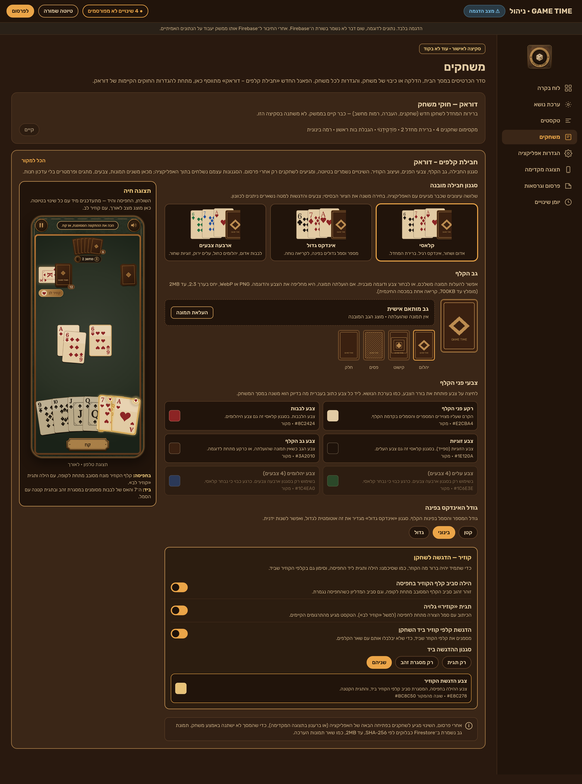
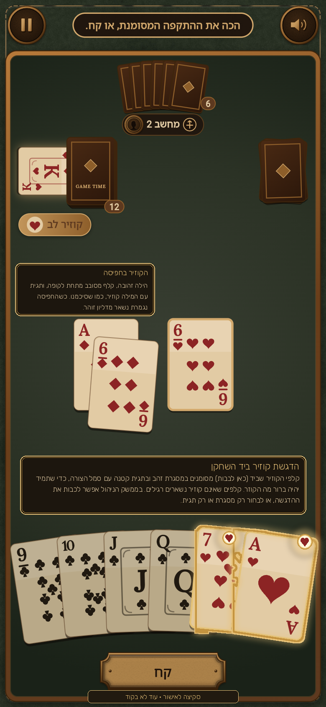
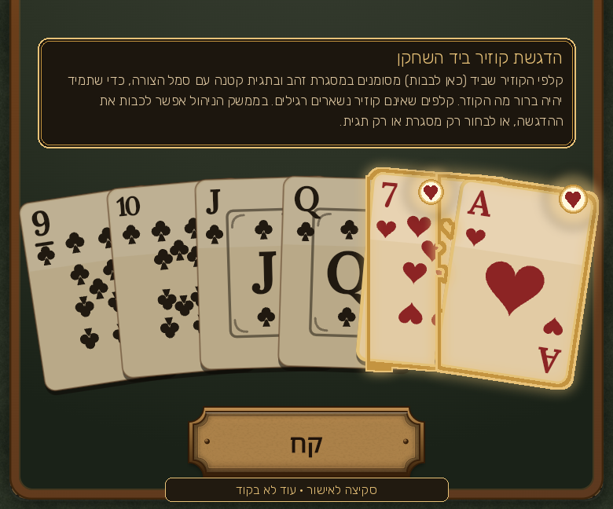
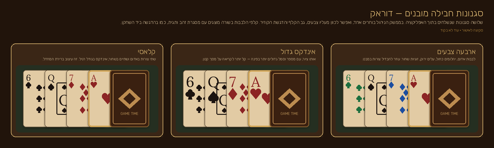

1. מסך הניהול «חבילת קלפים – דוראק»
סגנון מובנה, גב הקלף (העלאה / צבע / דוגמה), צבעי פנים עם הסבר בעברית מה כל צבע משנה, גודל אינדקס, ובלוק קוזיר עם תצוגת טלפון חיה.

סקיצות לאישור, לפני כתיבת קוד. הפאנל החדש יושב בעמוד «משחקים», מתחת להגדרות החוקים הקיימות של דוראק. סגנונות הציור נשלחים בתוך האפליקציה; מכאן משנים תמונות, צבעים, מתגים ופרמטרים בלי עדכון בחנות. לחצו על כל תמונה להגדלה.
סגנון מובנה, גב הקלף (העלאה / צבע / דוגמה), צבעי פנים עם הסבר בעברית מה כל צבע משנה, גודל אינדקס, ובלוק קוזיר עם תצוגת טלפון חיה.

כך זה נראה במשחק: מסגרת זהב ותגית קטנה עם סמל הצורה על קלפי הקוזיר שביד, בנוסף להילה ולתגית ליד החפיסה.

קלפי הלבבות (הקוזיר כאן) מסומנים; השחורות נשארות רגילות. בממשק הניהול אפשר לבחור רק מסגרת, רק תגית, או את שניהם, או לכבות.

קלאסי (ברירת מחדל), אינדקס גדול לקריאה, וארבעה צבעים (לבבות אדום, יהלומים כחול, עלים ירוק, זוגיות שחור). קלף הקוזיר בשורה מוצג כבר עם מסגרת ותגית.

שום דבר מזה לא נכתב עדיין לקוד. אחרי אישור הסקיצות אפשר לבנות.
| שדה | מה זה עושה | איפה נשמר | מה צריך לעדכן |
|---|---|---|---|
games.durak.deck.styleclassic / large_index / four_color |
סגנון חבילה מובנה. ברירת מחדל: קלאסי. | בתוך הגדרות דוראק בקונפיג | כן: firestore.rules (פונקציית durakOk — היום רשימת מפתחות סגורה בלי deck), וחבילת gametime_config (מחלקת DurakSettings + ולידציה) |
games.durak.deck.backPatterndiamond / ornament / stripe / plain |
דוגמת הגב כשאין תמונה שהועלתה. ברירת מחדל: יהלום (כמו היום). | אותו מפתח deck |
אותם כללי deck למעלה |
games.durak.deck.indexSizes / m / l |
גודל המספר והסמל בפינת הקלף. סגנון «אינדקס גדול» מגדיר l, ואפשר לשנות ידנית. | אותו מפתח deck |
אותם כללי deck למעלה |
games.durak.deck.trumpHalo (bool, ברירת מחדל true)trumpPill (bool, true)trumpInHand (bool, true)trumpInHandStyle (badge / gold_edge / both, ברירת מחדל both) |
הילה בחפיסה, תגית «קוזיר», והדגשה ביד (תגית, מסגרת זהב, או שניהם). | אותו מפתח deck |
אותם כללי deck למעלה |
theme.colorspalette.durakFacepalette.durakSuitRedpalette.durakSuitBlackpalette.durakSuitGreenpalette.durakSuitBluepalette.durakBackpalette.durakTrumpHighlight |
צבעי פנים, גב, והדגשת הקוזיר. לכל אחד תווית והסבר בעברית, כמו שאר צבעי הערכה. ירוק וכחול פעילים רק בסגנון 4 צבעים. | צבעי הערכה (אותו מנגנון קיים) | כן: קטלוג הצבעים ב־gametime_config (תוויות, הסברים, קבוצת «דוראק», וערכי מקור ב־default_colors / theme.json). כללי Firestore לא דורשים שינוי מפתח: כבר מותרים עד 200 צבעים. |
theme.images['durak.cardBack'] |
תמונת גב מותאמת. PNG או WebP, יחס בערך 2:3, עד 2MB (מומלץ עד 700KB). נשמרת בבלוקים לפי SHA-256, כמו שאר תמונות הערכה. | תמונות הערכה (הצינור הקיים) | כן: הוספת משבצת ל־imageSlots בקטלוג. כללי Firestore לא דורשים שינוי מפתח: כבר מותרות עד 20 תמונות, והיום יש 6. הוולידציה של החבילה חייבת להכיר את המפתח החדש, אחרת פרסום יידחה. |